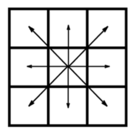
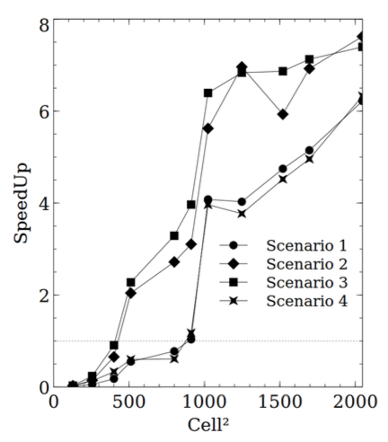
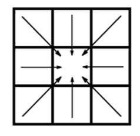
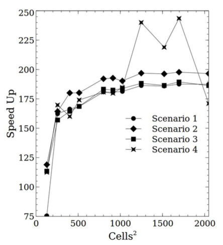

<!DOCTYPE html>
<html lang="en">
  <head>
    <meta name="viewport" content="width=device-width, initial-scale=1, maximum-scale=1">
    <title>this.data</title>
    <link rel="stylesheet" href="assets/css/font.css">
    <link rel="stylesheet" href="//maxcdn.bootstrapcdn.com/font-awesome/4.2.0/css/font-awesome.min.css">
    <link rel="stylesheet" href="//cdnjs.cloudflare.com/ajax/libs/highlight.js/8.4/styles/github.min.css">
    <link href="//cdn-images.mailchimp.com/embedcode/slim-081711.css" rel="stylesheet" type="text/css">
    <script type="text/javascript" src="//cdn.mathjax.org/mathjax/latest/MathJax.js?config=TeX-AMS-MML_HTMLorMML"></script>
    <link rel="stylesheet" href="assets/css/style.css">
  </head>
</html>
<body>
  <div id="side-bar">
    <div id="header">
      <div id="title">this.data</div>
      <div id="author">
        <div id="name">Flávio Sousa</div>
        <div id="social-media"><a href="//pt.linkedin.com/pub/flávio-sousa/3a/a06/770/" target="_blank"><i class="fa fa-linkedin"></i></a><a href="//twitter.com/fjmarujo" target="_blank"><i class="fa fa-twitter"></i></a><a href="//github.com/fjsousa" target="_blank"><i class="fa fa-github"></i></a></div>
      </div>
    </div>
    <div id="menu"><a href="webrtc-part1.html"><span id="nav-item-title">WebRTC Part 1</span></a><span id="nav-item-date">(27-02-2015)</span><br><a href="webrtc-part2.html"><span id="nav-item-title">WebRTC Part 2</span></a><span id="nav-item-date">(20-03-2015)</span></div>
    <div id="footer-bar">
      <div id="mc_embed_signup">
        <form id="mc-embedded-subscribe-form" action="//github.us10.list-manage.com/subscribe/post?u=5b26850668dc6b3f84778ca5e&amp;id=cb5f4eedfe" method="post" name="mc-embedded-subscribe-form" target="_blank" novalidate="" class="validate">
          <div id="mc_embed_signup_scroll">
            <label for="mce-EMAIL">Subscribe to the mailing list</label>      
            <input id="mce-EMAIL" type="email" value="" name="EMAIL" placeholder="email address" required="" class="email">
            <!-- real people should not fill this in and expect good things - do not remove this or risk form bot signups-->
            <div style="position: absolute; left: -5000px;">
              <input type="text" name="b_5b26850668dc6b3f84778ca5e_cb5f4eedfe" tabindex="-1" value="">
            </div>      
            <div class="clear">
              <input id="mc-embedded-subscribe" type="submit" value="Subscribe" name="subscribe" class="button">
            </div>
          </div>
        </form>
      </div>
      <div id="about">
        <p id="about-title">About: </p>
        <p>
          this.data is a blog about numbers, modelling 
          and coding in general
        </p>
      </div>
    </div>
  </div>
  <div id="container">
    <div id="content"><h1 id="forest-fires-and-parallel-cellular-automata">Forest Fires and Parallel Cellular Automata</h1>
<p>Forest fire numerical models use Cellular Automata (CA) to simulate fire propagation. In this blog post, I&#39;ll show you two versions of a CA model, a trivial and a parallel version I developed during my Masters.</p>
<p>Both versions were ported to<a href="https://en.wikipedia.org/wiki/CUDA">Nvidia GPUs</a> with the aim of speeding up the existing single core implementation. </p>
<p>Initially, a direct, naive port was attempted which wasn&#39;t very performant. This lead me to reformulate the algorithm so that is was fully parallel and therefore, more suitable to the many-core architecture of the GPU.</p>
<p>The performance increase ended up being due to the reformation of the algoritm and not to a tweaking  or fine tunning of the naive port in the GPU. </p>
<h2 id="naive-algorithm">Naive algorithm</h2>
<p>The existing algorithm was the following:</p>
<p>-An outer loop iterates over time and an inner loop iterates in space, over the rows and columns of the forest numerical terrain.</p>
<p>-The inner loop looks for active cells in a map of ignition times and propagates the fire outwards, to each one of the 8 neighbours.</p>
<p>-The ignition time of each neighbour is computed with the formula below, and the ignition map is updated:</p>

      <div class="equation">$$ t + \frac{l}{ROS}$$</div><p>where <em>ROS</em> is the <strong>R</strong>ate <strong>O</strong>f <strong>S</strong>pread, basically the flame speed in the neighbour direction, function of wind, moisture, terrain, etc.</p>

      <div class="fgm-wrapper">
        <canvas id="fgm-serial" width="400" height="400">Consider updating your browser.</canvas>
        <button onclick="dumb.run()" class="actionbutton">Run</button>
      </div><p>If you press <strong>Run</strong>, you&#39;ll see an animation of the fire propagation with the naive version of the CA. Notice that each square represents a portion of the terrain 
and the colour is just a linear scale that maps to ignition time value. The scale goes from blue, to red, white is the starting point and black means the cell is unburned.</p>
<p>This is the JavaScript code that runs the spatial loop. If you inspect this page, you&#39;ll see a very similar code:</p>
<pre><code class="lang-Javascript">
function dumbSpatialLoop(){

  t = tn;
  tn = Infinity;


  //Spatial loop that looks for active cells, 
  //ie, cells with ignition time = t
  for ( row = 0; row &lt; rows; row++){
    for ( col = 0; col &lt; cols; col++){
      var idx = col + cols*row;

      //Update tn, so that tn is the minimum
      //ignition time for all cells,
      //in a given iteration
      if ( ignitionMap[idx] &gt; t &amp;&amp; 
        tn &gt; ignitionMap[idx] ){

        tn = ignitionMap[idx];
        continue;
      } 

      //skips cells that already burned
      if ( ignitionMap[idx] !== t )
        continue;

      //propagate fire for all 8 neighours
      for (var n = 0; n &lt; 8; n++){

        //neighbour index calc
        var ncol = col + ncols[n];
        var nrow = row + nrows[n];
        var nidx = ncol + nrow*cols;

        //Check if neighbour is inbound
        if ( !(nrow &gt;= 0 &amp;&amp; nrow &lt; rows &amp;&amp; 
          ncol &gt;= 0 &amp;&amp; ncol &lt; cols) )
          continue;

        // skip if cell has already burned
        if ( ignitionMap[nidx] &lt; t )
          continue;

        //Compute neighbour cell ignition time, 
        //based on the propagation speed
        //tcell = t + cell dist / flame_speed
        igntime = t + ndist[n] / ROS;


        //Update ignition time in the map only
        //if the the current time is smaller
        if(igntime &lt; ignitionMap[nidx]){
          ignitionMap[nidx] = igntime;
        }

        //Update tn
        if( igntime &lt; tn )
          tn = igntime;
      }
    }
  }
}
</code></pre>
<p>As I said, porting this algorithm to GPUs in a straightforward way resulted in very poor performance. I associated each cell with a GPU thread and ended up with threads writing in each other&#39;s memory and dealling with race conditions. </p>
<p></p>
<p>Also, the process doesn&#39;t have a great degree of parallelism because at each time step, very few cells 
are actually propagating and thus, require computation. Here&#39;s the speedups for several scenarios with different values for wind, fuel and moisture:     </p>
<p></p>
<p>As you can see, very far from the two orders of magnitude in performance increase you usually get with GPUs.</p>
<h2 id="smarter-approach">Smarter approach</h2>
<p>The algorithm we&#39;ve seen mimics the way fire propagates in real life, propagating the fire to adjacent cells, one at the time. </p>
<p>Ignition times in surrounding cells are calculated, as we have seen, like this:</p>
<pre><code class="lang-Javascript">
  igntime = t + ndist[n] / ROS;

  if(igntime &lt; ignitionMap[nidx]){
    ignitionMap[nidx] = igntime;
  }
</code></pre>
<p>During the process, the ignition time in each cell is continuously updated, so that if two cells propagate to the same cell, the minimum time of the two is considered and stored as the true ignition time.</p>
<p>Looking at the problem in another way, what we have is a condition that can be stated as follows: the ignition time of each cell, is always the minimum of the set of ignition times accounted from the 8 surrounding cells.</p>
<p>From this, instead of computing outward ignition times at each neighbour, I 
compute the inner cell ignition time from each neighbour.</p>
<p></p>
<p>But now the question is, how can I compute ignition times from cells that haven&#39;t burned yet? </p>
<p>The solution is to do it iteratively, ie, to start from a random ignition map and compute each new map function of the previous one, until there is virtually no difference between any two consecutive ignition maps. </p>

      <div class="fgm-wrapper">
        <canvas id="fgm-parallel" width="400" height="400">Consider updating your browser.</canvas>
        <button onclick="smart.run()" class="actionbutton">Run</button>
      </div><p>This is how the spatial loop looks like:</p>
<pre><code class="lang-Javascript">
function smartSpatialLoop(){

  for ( row = 0; row &lt; rows; row++){
    for ( col = 0; col &lt; cols; col++){
      var idx = col + cols*row;

      //skip ignition cell
      if (ignitionMap[idx] === 0)
        continue;

      var minArray = [];
      for (var n = 0; n &lt; 8; n++){

        //neighbour index calc
        var ncol = col + ncols[n];
        var nrow = row + nrows[n];
        var nidx = ncol + nrow*cols;

        //Check if neighbour is inbound
        if ( !(nrow &gt;= 0 &amp;&amp; nrow &lt; rows 
          &amp;&amp; ncol &gt;= 0 &amp;&amp; ncol &lt; cols) )
          continue;

        //compute ignition time considering that the
        //flame moves from the neighbour to the center cell
        var igntime = ignitionMap[nidx] 
          + ndist[n] / rosmap[nidx];
        minArray.push(igntime);

      }
      //associate the minimum of the ignition times
      //to the ignition time of the center cell
      ignitionMap[idx] = Math.min.apply(null, minArray);;

    }
  }

}
</code></pre>
<p>The algorithm is much more efficient because I no longer spend most of the time looking for empty cells. Also, because of the it&#39;s parallelism, I there&#39;s no race condition and consequent serialization. The performance gains are around two orders of magnitude.</p>
<p></p>
<p>The two models side by side, with the same iteration interval of 100ms. Notice that the conditions are random, so each time you refresh the page, you&#39;ll get a slightly different simulation: </p>

      <div style="display:flex;justify-content:center;align-items:center;width:90%;" class="fgm-wrapper">
        <canvas id="fgm-parallel-twin" width="250" height="250">Consider updating your browser.</canvas>
        <canvas id="fgm-serial-twin" width="250" height="250">Consider updating your browser.</canvas>
      </div>
      <button onclick="smart2.run();dumb2.run();" class="actionbutton">Run</button><p>a cena corre mais rapido porque mudaste o algoritmo, e n porque andaste a ler manuais de documentacao a descobrir como fazer finetunning de uma ma ideia a partida
If you want to know more just follow the link and read the<a href="https://github.com/fjsousa/fjsousa.github.io/blob/master/assets/docs/sousa-etall.pdf" target="_blank">white paper</a>.</p>

      <div id="disqus_thread">    
        <script type="text/javascript">
          /* * * CONFIGURATION VARIABLES: EDIT BEFORE PASTING INTO YOUR WEBPAGE * * */
          var disqus_shortname = 'this-data'; // required: replace example with your forum shortname
          
          /* * * DON'T EDIT BELOW THIS LINE * * */
          (function() {
              var dsq = document.createElement('script'); dsq.type = 'text/javascript'; dsq.async = true;
              dsq.src = '//' + disqus_shortname + '.disqus.com/embed.js';
              (document.getElementsByTagName('head')[0] || document.getElementsByTagName('body')[0]).appendChild(dsq);
          })();
        </script>    
        <noscript>Please enable JavaScript to view the <a href="https://disqus.com/?ref_noscript">comments powered by Disqus.  	</a></noscript>
      </div>
    </div>
  </div>
  <div id="footer"></div>
  <script>
    (function(i,s,o,g,r,a,m){i['GoogleAnalyticsObject']=r;i[r]=i[r]||function(){
      (i[r].q=i[r].q||[]).push(arguments)},i[r].l=1*new Date();a=s.createElement(o),
      m=s.getElementsByTagName(o)[0];a.async=1;a.src=g;m.parentNode.insertBefore(a,m)
      })(window,document,'script','//www.google-analytics.com/analytics.js','ga');
      ga('create', 'UA-53583095-1', 'auto');
      ga('send', 'pageview');
    
    
  </script>
  <script src="//code.jquery.com/jquery-1.11.2.min.js"></script>
  <script type="text/javascript" src="//cdnjs.cloudflare.com/ajax/libs/highlight.js/8.4/highlight.min.js"></script>
  <script>hljs.initHighlightingOnLoad();</script>
</body>
<script type="text/javascript" src="assets/src/rags.js"></script>
<script type="text/javascript" src="assets/src/fgm-main.js"></script>